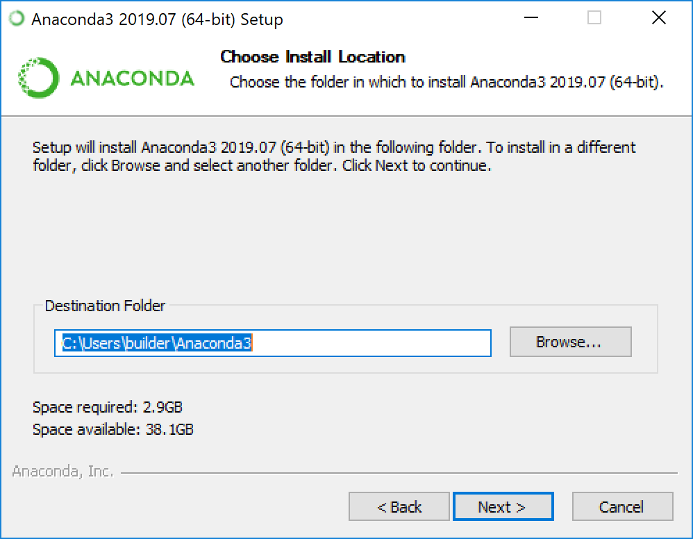
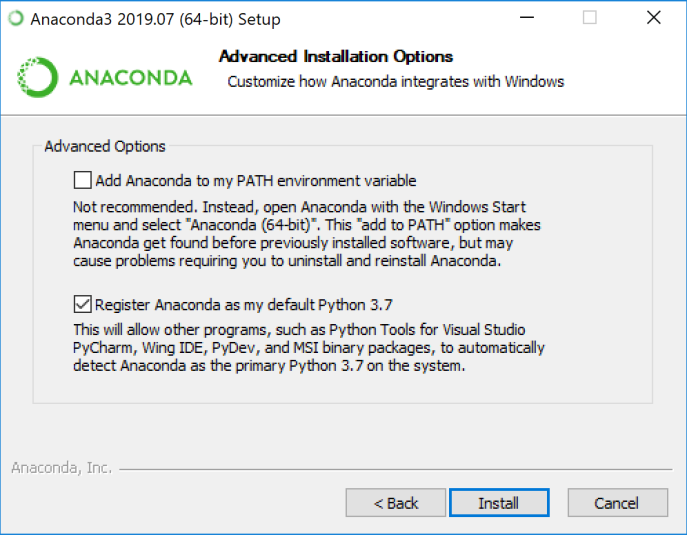
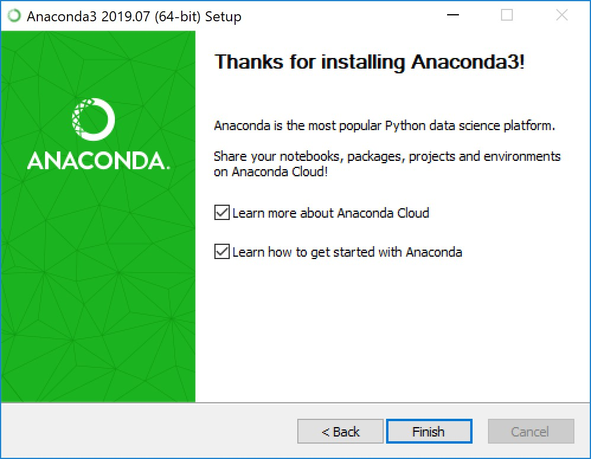

INSTALLATION EN LIGNE DE COMMANDE DE ANACONDA¶
un serpent peut-en cacher un autre
ANACONDA est une distribution libre et open source3 des langages de programmation Python et R appliqué au développement d”applications dédiées à la science des données et à l”apprentissage automatique (traitement de données à grande échelle, analyse prédictive, calcul scientifique), qui vise à simplifier la gestion des paquets et de déploiement4. Les versions de paquetages sont gérées par le système de gestion de paquets conda5. La distribution Anaconda est utilisée par plus de 6 millions d”utilisateurs et comprend plus de 250 paquets populaires en science des données adaptés pour Windows, Linux et MacOS.
Ubuntu¶
allez sur le site https://www.anaconda.com/
télécharger le fichier Anaconda3-2019.10-Linux-x86_64.sh
ouvrir le terminal et écrire les lignes de commande suivantes:
3.1. sha256sum /path/filename
3.2. bash ~/téléchargements/Anaconda3-2019.10-Linux-x86_64.sh
ouvrir anacoda:
4.1 anaconda-navigator
MAC¶
Dans votre navigateur, téléchargez la version en ligne de commande du programme d” installation de macOS pour votre système.
RECOMMANDÉ: Vérifiez l”intégrité des données avec SHA-256 . Pour plus d”informations sur la vérification du hachage, voir Validation du hachage cryptographique .
Ouvrez un terminal et exécutez ce qui suit:
shasum -a 256 /path/filename
Remarque:
Remplacez /path/filenamepar le chemin et le nom de fichier de votre installation.
- Installez pour Python 3.7: (s”il n”est pas encore installer)
voir la rubrique installation de python
- Le programme d”installation demande «Afin de poursuivre le processus d”installation, veuillez consulter le contrat de licence.» Cliquez sur Entrée pour afficher les termes de la licence.
- Faites défiler vers le bas des conditions de licence et entrez oui pour les accepter.
- Le programme d”installation vous invite à appuyer sur Entrée pour confirmer l”emplacement, à appuyer sur
CTRL-C pour annuler l”installation ou à spécifier un autre répertoire d”installation. Si vous confirmez
l”emplacement par défaut, il s”affichera et poursuivra l”installation.PREFIX=/home/
/anaconda<2 or 3>
Remarque
Contrairement à l”installation graphique, l”installation du fichier shell le placera par défaut dans ~ / anaconda <2 ou 3>, pas dans ~ / opt. Cela est dû aux limitations de l”installation des fichiers .pkg sur macOS Catalina.
- pour ouvrir anacoda:
anaconda-navigator
Windows¶
- Téléchargez le programme d”installation d”Anaconda .
- RECOMMANDÉ: Vérifiez l”intégrité des données avec SHA-256 . Pour plus d”informations sur les hachages, voir Qu”en est-il de la vérification de hachage cryptographique?
- Double-cliquez sur le programme d”installation pour lancer.
Remarque
Pour éviter les erreurs d”autorisation, ne lancez pas le programme d”installation à partir du dossier Favoris .
Remarque
Si vous rencontrez des problèmes lors de l”installation, désactivez temporairement votre logiciel antivirus pendant l”installation, puis réactivez-le une fois l”installation terminée. Si vous avez installé pour tous les utilisateurs, désinstallez Anaconda et réinstallez-le pour votre utilisateur uniquement et réessayez.
- Cliquez sur Suivant.
- Lisez les conditions de licence et cliquez sur «J”accepte».
- Sélectionnez une installation pour «Just Me», sauf si vous effectuez l”installation pour tous les utilisateurs (ce qui nécessite des privilèges d”administrateur Windows) et cliquez sur Suivant.
- Sélectionnez un dossier de destination pour installer Anaconda et cliquez sur le bouton Suivant. Voir FAQ .
Remarque
Installez Anaconda dans un chemin de répertoire qui ne contient pas d”espaces ni de caractères Unicode.
Remarque
N”installez pas en tant qu”administrateur sauf si les privilèges d”administrateur sont requis.

- Choisissez d”ajouter Anaconda à votre variable d”environnement PATH. Nous vous recommandons de ne pas ajouter Anaconda à la variable d”environnement PATH, car cela peut interférer avec d”autres logiciels. À la place, utilisez le logiciel Anaconda en ouvrant Anaconda Navigator ou l”invite Anaconda dans le menu Démarrer.

Choisissez d”enregistrer Anaconda comme Python par défaut. Sauf si vous prévoyez d”installer et d”exécuter plusieurs versions d”Anaconda ou plusieurs versions de Python, acceptez la valeur par défaut et laissez cette case cochée.
Cliquez sur le bouton Installer. Si vous souhaitez regarder les packages qu”Anaconda installe, cliquez sur Afficher les détails.
Cliquez sur le bouton Suivant.
Après une installation réussie, vous verrez la boîte de dialogue «Merci d”avoir installé Anaconda»:

Si vous souhaitez en savoir plus sur Anaconda Cloud et comment démarrer avec Anaconda, cochez les cases «En savoir plus sur Anaconda Cloud» et «Apprenez à démarrer avec Anaconda». Cliquez sur le bouton Terminer.